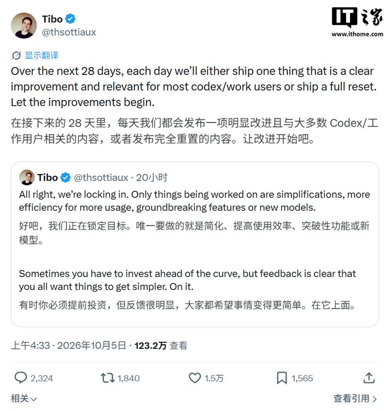

一、模型竞争：中美差距收窄，开放权重升温
DeepSeek V4.1 Flash 发力，中美顶尖模型榜单差距缩至约 3%
亮点据彭博行业研究，过去几个月随着 DeepSeek 等中国 AI 实验室的模型持续进步，美国公司相对中国同行的性能领先优势急剧缩小，降至历史最低水平；报道提到 DeepSeek V4.1 Flash 的表现，使中美顶尖模型在 LiveBench 上的跑分差距缩至约 3%，彭博称这让美国的科技主导地位面临挑战。
影响推测榜单差距收窄不等于综合能力完全追平——评测集、推理成本、工具链与生态仍是变量。但趋势比较明确：前沿能力正从少数实验室向更多玩家扩散，定价与开源策略的竞争会更激烈。具体分数与口径仍以原始评测为准。
消息称 Reflection 等多家西方企业本月将推出开放权重模型
亮点外媒 Axios 当地时间 4 日报道称，Reflection 等多家西方企业本月将推出开放权重（open-weight）AI 模型，模型领域竞争进一步升级。开放权重的一大好处是支持客户本地部署，对微调与推理数据安全要求严格的行业来说是一项关键优势。
影响推测若报道属实，意味着「开放权重」不再只是中国实验室与 Meta 的标签，西方初创也在用它争夺企业市场。与 DeepSeek 的进展叠加，可本地部署模型的供给增加，可能压缩闭源 API 在数据敏感场景的溢价；不过「本月推出」的规模与质量尚无细节。
DeepSeek 开源算子工具大礼包，联手华为昇腾对标 CUDA
亮点雷峰网报道，DeepSeek 把面向英伟达 GPU 的一整套算子工具链迁移到华为昇腾 950 NPU：核心算子开发产品 TileLang 官宣原生支持昇腾，DeepGEMM、DeepEP、FlashMLA、TileKernels、DeepSelect 五大计算与通信库同步推出昇腾版本。报道称，这是国产算力第一次在核心算子工具层面做到与英伟达平台对标。
影响推测算子与通信库是 GPU 生态的「黏合剂」，补齐它在很大程度上决定国产芯片能否承接真实训练与推理负载。但「工具链可用」到「大规模稳定训练」之间仍有距离，生态成熟度需要长期验证，短期内不宜高估。
二、安全与治理：警告、分歧与「超级智能」政治
孙正义罕见发出 AI 安全警告，呼吁各国携手应对
亮点据彭博社报道，长期被视为 AI 最坚定拥护者之一的软银集团创始人孙正义坦言，随着 AI 能力突飞猛进，就连他也对随之而来的安全风险深感担忧。他在京都「科学与技术在社会中的作用」论坛上，与白宫科技政策顾问迈克尔 · 克拉齐奥斯同台发言时指出，AI 能力的指数级爆发使各国建立互信变得迫切。
影响推测产业界最积极的资本方之一公开谈风险，说明安全议题正从研究者扩散到出资人层面。这类表态更多是立场信号，是否会转化为具体投入或治理倡议，仍需观察。
奥尔特曼：AI 的巨大效益值得社会承担部分风险
来源：IT之家（引 Decoded 专访）·
原文亮点OpenAI CEO 奥尔特曼在《Decoded》专访中表示，他与竞争对手 Anthropic 在 AI 监管问题上仍存在根本性的世界观分歧。他认为 AI 技术带来的巨大效益完全值得社会承担部分风险，且这项技术应当继续面向公众广泛开放。
影响推测与同日孙正义的「安全警告」对照，行业内部「开放优先还是安全优先」的分歧正在公开化。这种分歧会直接反映到监管游说、产品发布节奏与公众沟通上，短期内难以弥合。
OpenAI 因安全担忧推迟 IPO，转而寻求 300 亿美元私募融资
亮点Ars Technica 报道，OpenAI 以 AI 安全担忧为由推迟 IPO 计划，同时寻求另外 300 亿美元的私募融资。
影响推测IPO 延期叠加此前安全条线的人事动荡，会让外界对其治理与长期资金结构更加谨慎。选择私募也意味着短期不必承受公开市场的透明度与业绩压力——这对「安全叙事」究竟是助力还是回避，仍在争论之中。
特朗普公布新的「超级智能力量」（Super Intelligence Force）
亮点TechCrunch 报道，特朗普公布名为「超级智能力量」（Super Intelligence Force）的新工作组，作为他对 AI 安全争论的最新回应。此前他已签署行政令，要求行政部门与机构改用「超级智能」（SI）一词替代「人工智能」（AI）。
影响推测把「AI」改称「超级智能」并设立专职机构，是把技术议题进一步政治化的信号；工作组的人员构成与职权范围，将决定它偏向「促进发展」还是「约束风险」。命名变化本身不改变技术现实，但会影响政策话语与公众认知。
三、智能体与产品：日更压力与隐私边界
OpenAI 宣布「28 天计划」：Codex、ChatGPT Work 每天一更新，否则「重置」
亮点OpenAI 核心产品与平台负责人 Thibault Sottiaux 在 X 上透露，团队将在未来 28 天持续推进 Codex 与 ChatGPT Work 的改进：每天发布一项对多数 Codex / Work 用户「有明显改善且具备实际意义」的功能更新；若做不到，就提供一次「重置」。
影响推测以「日更或重置」的公开承诺驱动产品节奏，是一种高强度的迭代加营销组合，也把团队置于持续交付的压力之下。对开发者而言，紧接 DevDay 之后的密集更新会加快工具链变化，需要留意兼容与迁移成本。

OpenAI GPT-6 Sol 被「开盒」，约 30 万字系统提示词泄露
亮点继此前 Opus 5.5 被曝出约 190 万字提示词泄露后，OpenAI 现役代码模型 GPT-6 Sol Codex 的系统提示词再被完整扒出，规模约 30 万字。
影响推测系统提示词泄露会让外界看清产品的行为规则与护栏设计，短期内可能引来更多针对性的提示注入与绕过尝试；但提示词只是系统的一层，模型权重与训练数据才是核心资产，泄露的实际危害相对有限。
Meta 助手 Muse 被曝为每位联系人建立个人档案
亮点据 IT之家，Meta 个人助手 Muse 走红后已有数百万用户下载，并将其与银行账户、消息软件、健康数据绑定。来自应用内部的数据显示，Muse 会对用户的社交关系做深度分析，并为每位联系人建立个人档案。
影响推测当「个人智能体」深度接入通讯录与财务、健康数据，「为联系人建档」就触及隐私与同意的边界——被分析的联系人并未授权。这类能力很可能成为下一轮监管与舆论争议的焦点。
Meta 开源 Muse Gadgets：用 ESP32 与树莓派做自定义智能体硬件
亮点Meta 于当地时间 10 月 2 日推出开源项目 Muse Gadgets，允许开发者为个人智能体 Muse 打造自定义硬件，并以 Apache 2.0 许可在 GitHub 发布 ESP32 固件与 Linux 设备 SDK；开发者可用低成本 ESP32 开发板或树莓派等设备接入 Muse。
影响推测开源硬件加个人智能体，是在硬件入口上复制「Android 式」生态的打法，能快速扩大触点。但设备端的数据采集与安全模型能否跟上，是决定它能否被信任的关键。
almost_usualhttps://lwn.net/Articles/1003059/ https://www.usenix.org/system/files/atc21-ousterhout.pdf
dangThanks, those are great! Added to toptext as well.
giovannibonetti我记得几个月前在播客里听过 Jane Street 的 Ron Minsky 谈这个话题，讲 TCP 如何成为 AI 集群的瓶颈。作为一名电气工程师，我记得电路交换让位给了……
cmaGoogle 的 TPU 就使用像电路交换一样的可光路由光纤，能够根据训练负载 / 矩阵维度改变整个设置的拓扑结构。
adastra22请不要把视频作为主要链接。